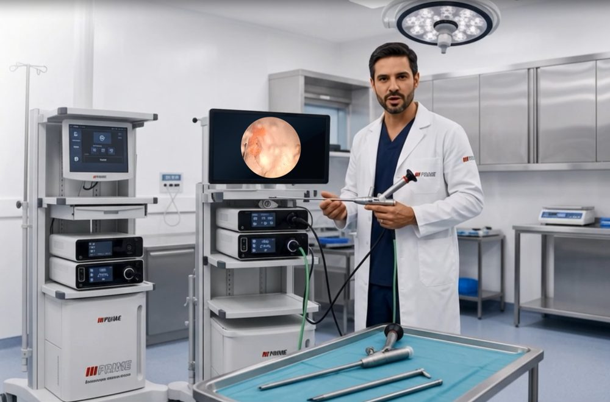

Manutenção deendoscópios deprecisão
Tecnologia para ambientes cirúrgicos
Trocamos tubo, objetiva e lentes, e lapidamos fibra de luz e distal. As lentes são originais e compatíveis com os principais fabricantes europeus.

Clique em uma peça e veja o serviço
Cada parte do endoscópio tem um reparo específico. Escolha a peça com problema e peça o orçamento já com o serviço indicado.
O que fazemos
Manutenção preventiva, corretiva e preditiva em equipamentos médicos, com foco em endoscópios.
Manutenção em endoscópios
Solicitar orçamentoTroca de tubo, troca de objetiva, lapidação da fibra de luz, lapidação da distal, troca da eyepiece, substituição da window proximal e substituição de lentes.
Consultoria técnica
Sob consultaAvaliação técnica do seu equipamento e orientação sobre o melhor caminho de reparo.
Equipamentos de teste
Linha PrimeDe multímetros a osciloscópios, para as medições mais complexas.
Instrumentos de medição
Alta precisãoSeleção de instrumentos para resultados confiáveis e consistentes em cada aplicação.
Acessórios especializados
ComplementosAcessórios que completam os equipamentos de teste e medição.
Do pedido ao endoscópio revisado
Conte o problema
Informe o serviço e o modelo do endoscópio pelo formulário ou pelo WhatsApp.
Receba o orçamento
Nossa equipe avalia o pedido e responde com o orçamento.
Aprove o serviço
Com a aprovação, o reparo é programado.
Receba revisado
O equipamento volta com a manutenção concluída.
Precisão que se vê na imagem final
Inovação em cada detalhe
Equipamentos e gabaritos de análise técnica de última geração, pensados para testes e medições exigentes.
Qualidade superior
Compromisso com a excelência. Cada serviço segue os mais altos padrões de qualidade e desempenho.
Suporte especializado
Acompanhamento técnico para você obter o máximo de qualidade e precisão nas suas medições.
Perguntas frequentes
Quais reparos vocês fazem?
Troca de tubo, troca de objetiva, lapidação da fibra de luz, lapidação da distal, troca da eyepiece, substituição da window proximal e substituição de lentes.
As lentes são originais?
Sim. Usamos lentes originais compatíveis com os principais fabricantes europeus.
Como peço um orçamento?
Preencha o formulário abaixo, que monta a mensagem para o WhatsApp, ou fale direto pelo telefone (16) 99223-7907 ou pelo e-mail primevideocirurgia@outlook.com.
Vocês fazem consultoria técnica?
Sim. A consultoria é sob consulta. Escolha "Consultoria técnica" no formulário de orçamento.
Onde vocês ficam?
Rua Odila Rosa Silva Vianna, 615, Bonfim Paulista / Jardim João Pontin, Ribeirão Preto/SP, CEP 14110-000.
Peça seu orçamento
Conte qual serviço você precisa e o modelo do equipamento. Montamos a mensagem e você envia pelo WhatsApp.
Bonfim Paulista / Jardim João Pontin
Ribeirão Preto/SP, CEP 14110-000